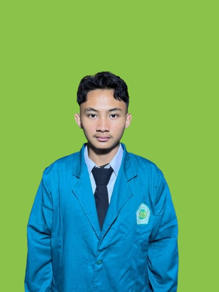
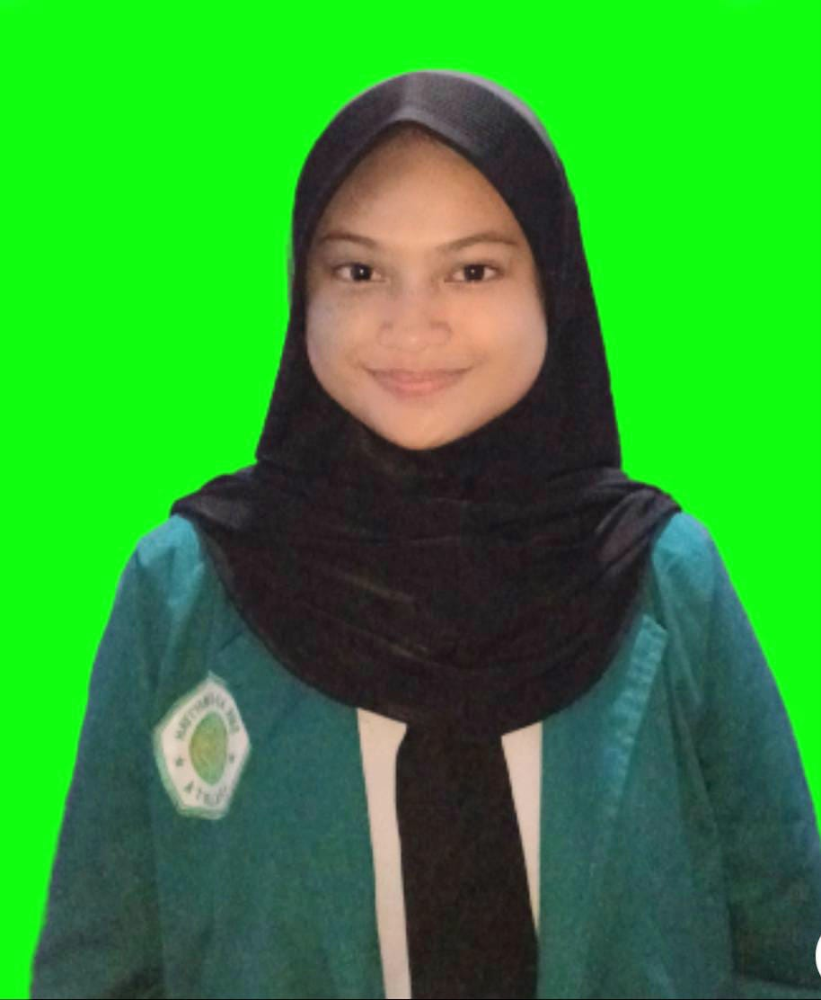
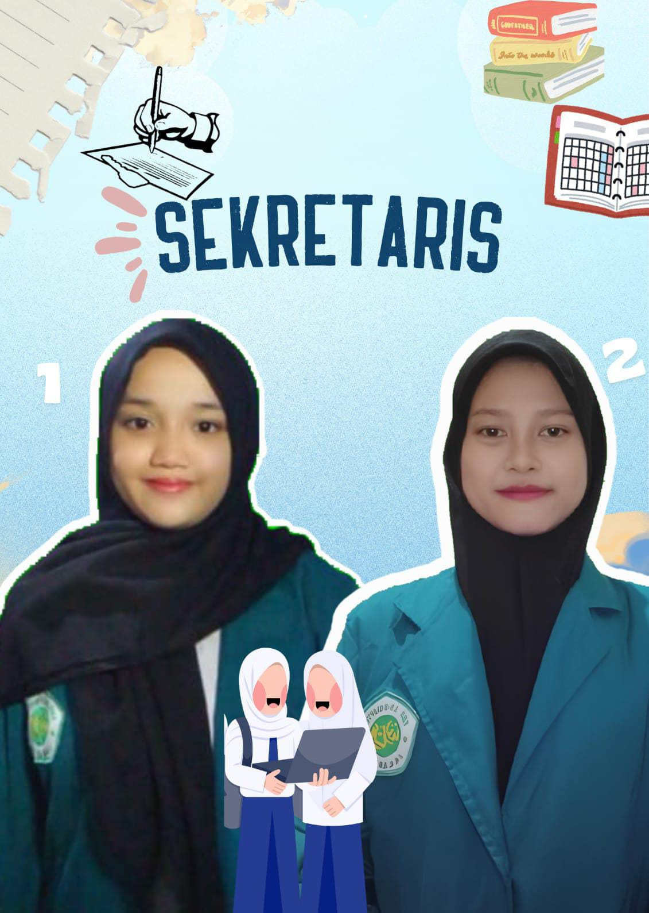
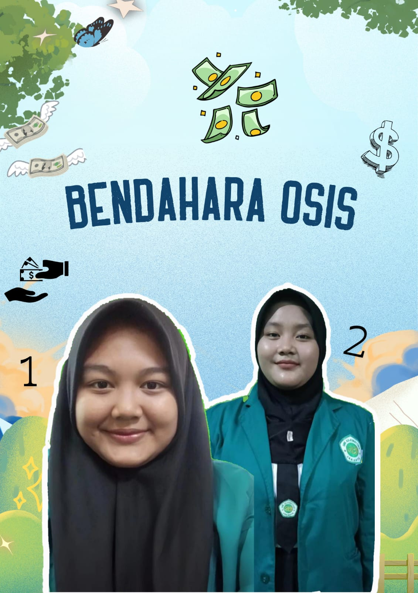
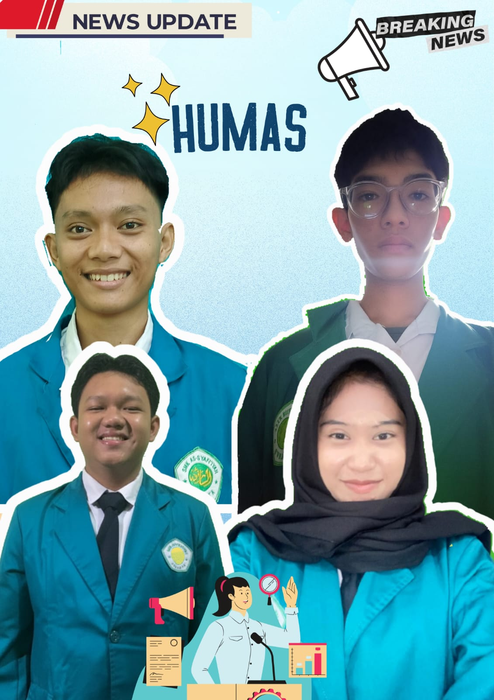
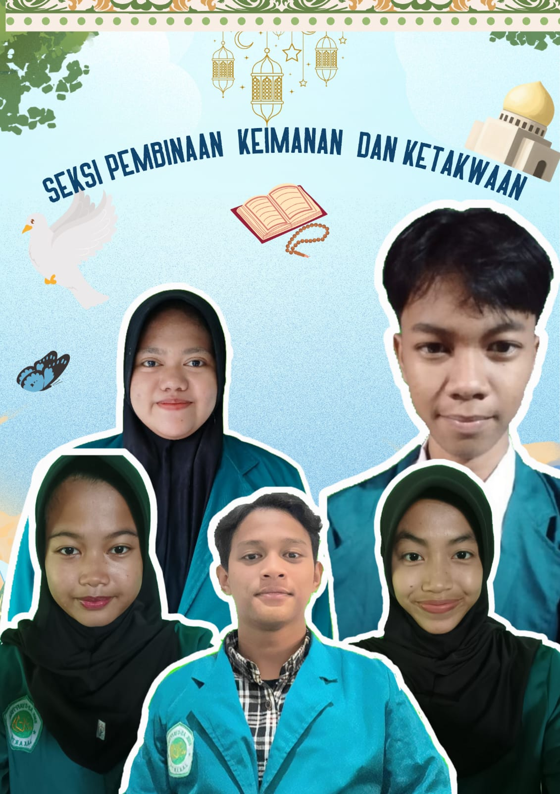

Struktur Pengurus OSIS

Ketua OSIS
Muhammad Faqih

Wakil Ketua
Raihana Nurpadhilah

Fatimahtul Zahra
Annisa Tri Andini
Sekretaris 1
Sekretaris 2

Keyza Herlianda
Hasina Aliya Hadi
Bendahara

Humas
- Allysa Kayla
- Farras Musyafa
- Fahri
- Vaiz Trilaksono

Seksi Pembinaan Kreativitas

Fakhri Zhofransyah
Zahra Aulia
Cindy Aulia Muthi
Ibnu
Widya Salma Lestaluhu